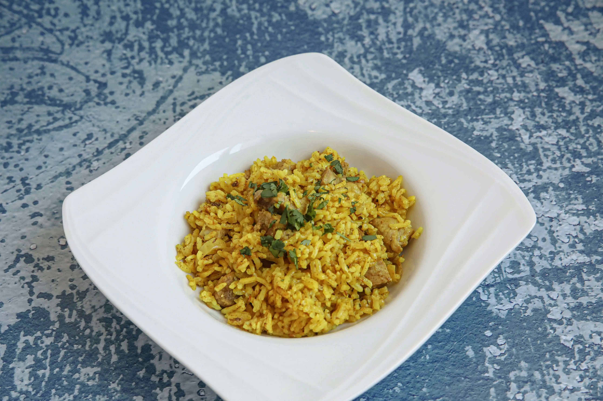
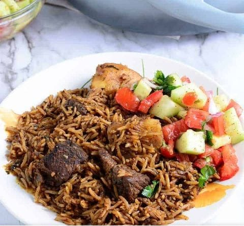

Pilau



Ingredients:
- 2 cups basmati rice
- 500g beef or chicken, cubed
- 2 tbsp cooking oil
- 1 onion, chopped
- 4 cups beef broth or water
- 1 tbsp pilau masala
- 1 tsp salt
- 2 tomatoes, diced
- 1-inch ginger, grated
- 3 cloves garlic, minced
Instructions:
- Prepare the meat: In a pot, heat oil and fry onions until golden brown. Add garlic, ginger, and pilau masala, and stir for a few seconds.
- Cook the meat: Add the beef/chicken and let it cook until browned. Then, add tomatoes and salt, and cook until soft.
- Add rice: Pour in the washed rice and stir well to mix with the spices.
- Cook: Add beef broth/water, cover, and let it simmer on low heat for 20 minutes until the rice is fully cooked.
- Serve: Fluff the rice with a fork and serve hot with kachumbari or banana on the side.
Nutritional information(per serving)
Calories: ~500 kcal
Protein: ~25g
Carbohydrates: ~80g
Fat: ~10g